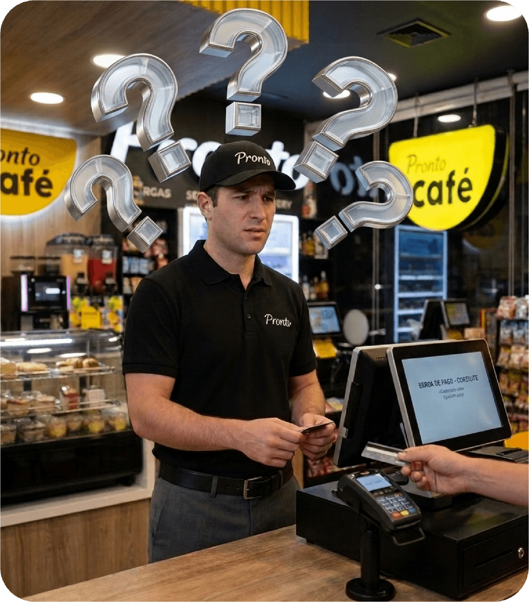
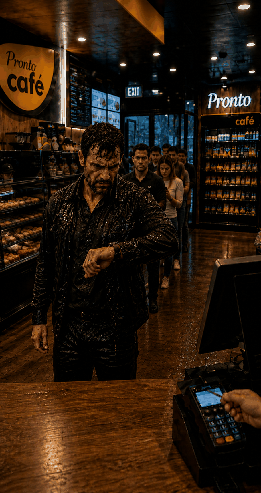
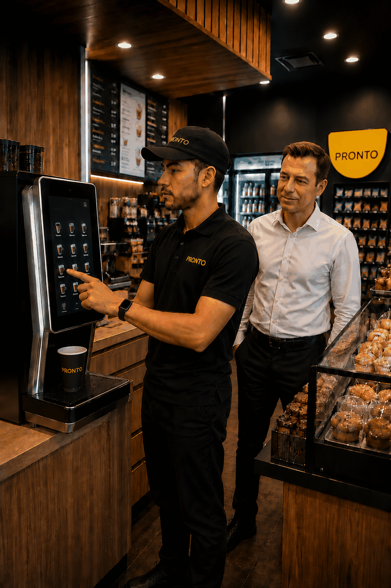
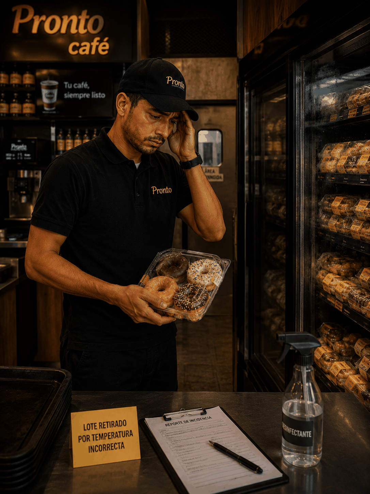
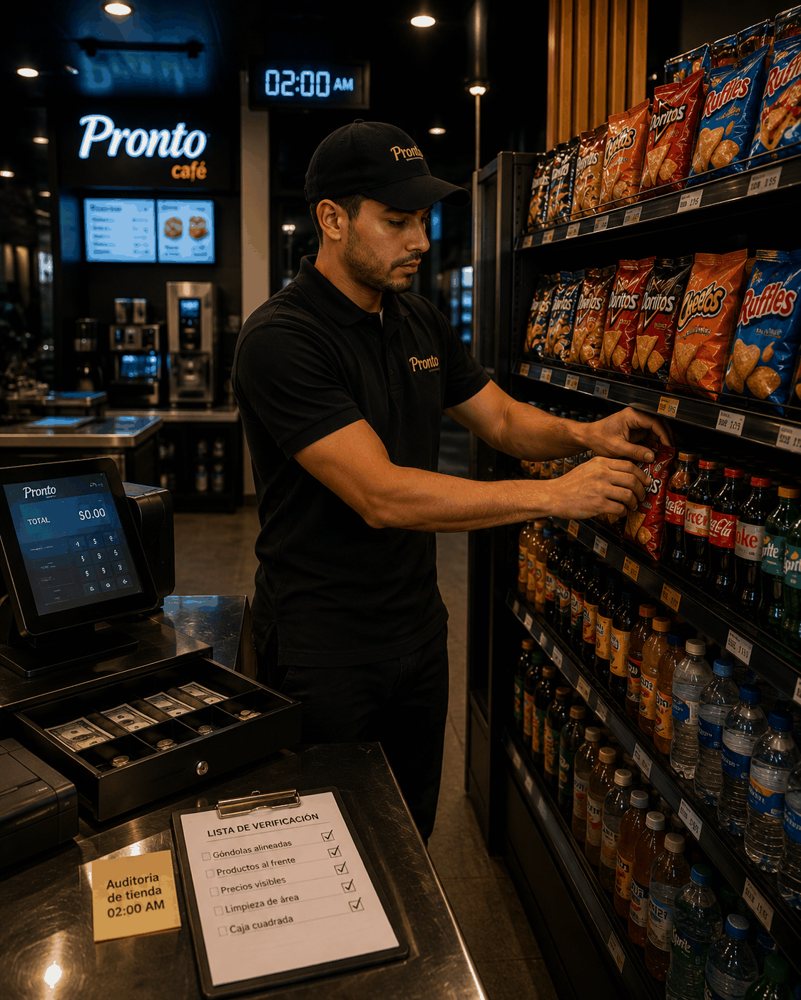

Héroes del instante: solo hacemos que suceda
¡Tu turno está por comenzar!
Entra y descubre los superpoderes que llevas dentro.

¿Cómo actúas cuando nadie te observa?
El verdadero valor de un héroe se nota cuando nadie lo está mirando. ¡Descubre tu primer superpoder!
¿Cómo aplico mi honestidad?
Tu superpoder asegurado: ¡Honestidad!
La confianza de nuestros clientes se construye en cada centavo.
Tu siguiente superpoder
Enfoque al Cliente

¿Un cliente difícil o un héroe sin capa en un mal día?
Tu actitud transforma un minuto de espera en una experiencia genial. ¡Actívalo!
¿Cómo aplico mi enfoque al cliente?
Tu superpoder asegurado: ¡Enfoque al Cliente!
Una interacción atenta transforma un día común en uno extraordinario. ¡Sigue con esa calidad!
Tu siguiente superpoder
Innovación

¿La tecnología es un obstáculo o tu mejor aliada en el turno?
Los verdaderos héroes adoptan el cambio y lideran el futuro de la tienda.
¿Cómo innovo?
Tu superpoder asegurado: ¡Innovación!
El cambio es la única constante para seguir siendo los mejores. ¡Sigue creando!
Tu siguiente superpoder
Responsabilidad

¿Tu estación refleja tu nivel de compromiso profesional?
La calidad de lo que entregamos comienza con tus manos. ¡Demuéstralo!
¿Cómo aplico mi responsabilidad?
Tu superpoder asegurado: ¡Responsabilidad!
Tu firma personal está en cada producto impecable que entregas. ¡Mantén el estándar!
Tu siguiente superpoder
Excelencia Operacional

¿Haces tu mejor trabajo cuando nadie te está vigilando?
La grandeza de nuestras tiendas se demuestra en los pequeños detalles invisibles.
Tips de Excelencia operacional
Tu superpoder asegurado: ¡Excelencia Operacional!
Hacer las cosas de forma extraordinaria es nuestro hábito diario. ¡Felicidades!
¡Felicidades,
Héroe del instante!
Has reforzado tus 5 superpoderes: Honestidad, Enfoque al Cliente, Innovación, Responsabilidad y Excelencia Operacional.
La operación de Tiendas Pronto y la satisfacción de nuestros clientes está en tus manos.
¡Haz que suceda en cada turno!